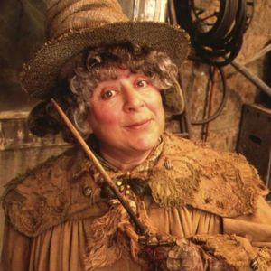

En Hogwarts, los estudiantes aprenden una variedad de materias mágicas esenciales para su formación como magos y brujas. Esto los preparará para enfrentar
los desafíos de la magia moderna y para convertirse en miembros responsables de la comunidad mágica. Las materias incluyen: Pociones, Transformaciones,
Adivinación, Herbología, Defensa Contra las Artes Oscuras, Historia de la Magia y Astronomía. Cada asignatura esta dirigida por un profesor especializado
que guía a los estudiantes en su aprendizaje y desarrollo mágico. Los contenidos de cada materia están diseñados para desarrollar habilidades mágicas
específicas, desde la comprensión de los principios básicos de la magia hasta el dominio avanzado de técnicas complejas. Sumérgete en el mundo mágico de
Hogwarts y descubre todo lo que esta escuela tiene para ofrecer. Descubre la historia, las materias y las casas de esta prestigiosa escuela. Inicia y
desarrolla tus habilidades magicas con nuestros cursos, dictados por profesores expertos de la magia.
Estudia en Hogwarts
Encantamientos
Profesor Filius Flitwick
El arte de canalizar la magia a través de palabras y movimientos exactos. Encantamientos enseña a dominar hechizos que modifican objetos,
protegen espacios y desatan poderosos efectos con un simple movimiento de varita.
Herbología
Profesora Pomona Sprout

El estudio de plantas mágicas y sus propiedades extraordinarias. En Herbología los alumnos cultivan, clasifican y aprenden a manejar especies
que pueden curar, proteger… o defenderse por sí mismas.
Pociones
Profesor Severus Snape
La materia donde la alquimia cobra vida. En Pociones los estudiantes aprenden a combinar ingredientes mágicos con precisión y paciencia para
crear elixires, antídotos y brebajes capaces de transformar cuerpos, mentes y destinos.
La Copa de las Casas es una competencia anual que enfrenta a las cuatro casas de Hogwarts: Gryffindor, Hufflepuff, Ravenclaw y Slytherin. A lo
largo del año, los estudiantes ganan puntos para sus casas a través de su desempeño académico, su comportamiento y su participación en actividades
escolares. Los puntos se otorgan por logros académicos, victorias en competiciones deportivas, actos de valentía, lealtad y sabiduría, entre
otros méritos. Al final del año escolar, la casa con más puntos es declarada ganadora de la Copa de las Casas. La competencia fomenta el
espíritu de equipo, la camaradería y el orgullo por la casa a la que pertenecen los estudiantes. Es un evento muy esperado por todos los miembros
de la comunidad de Hogwarts.